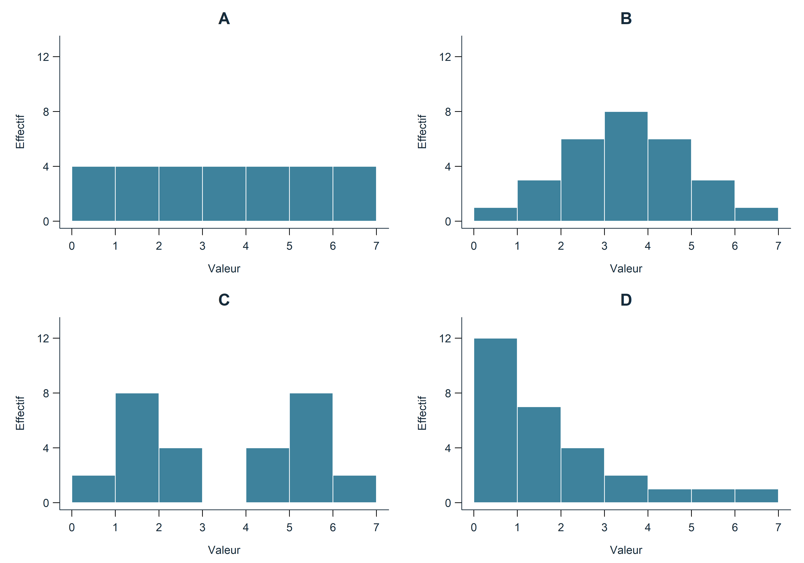
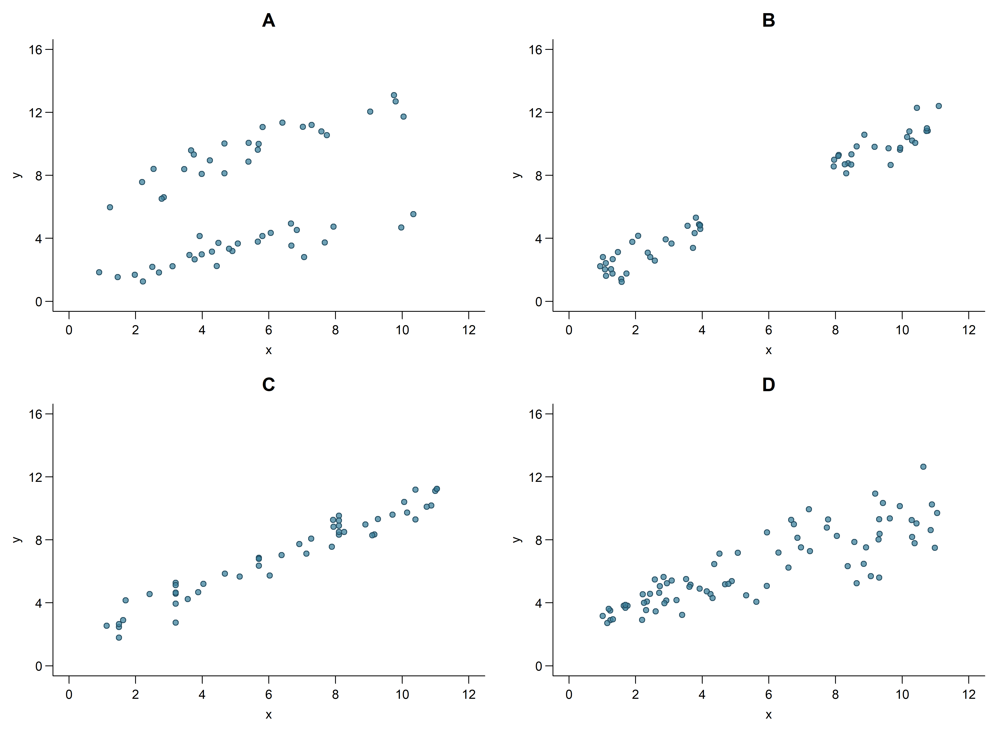
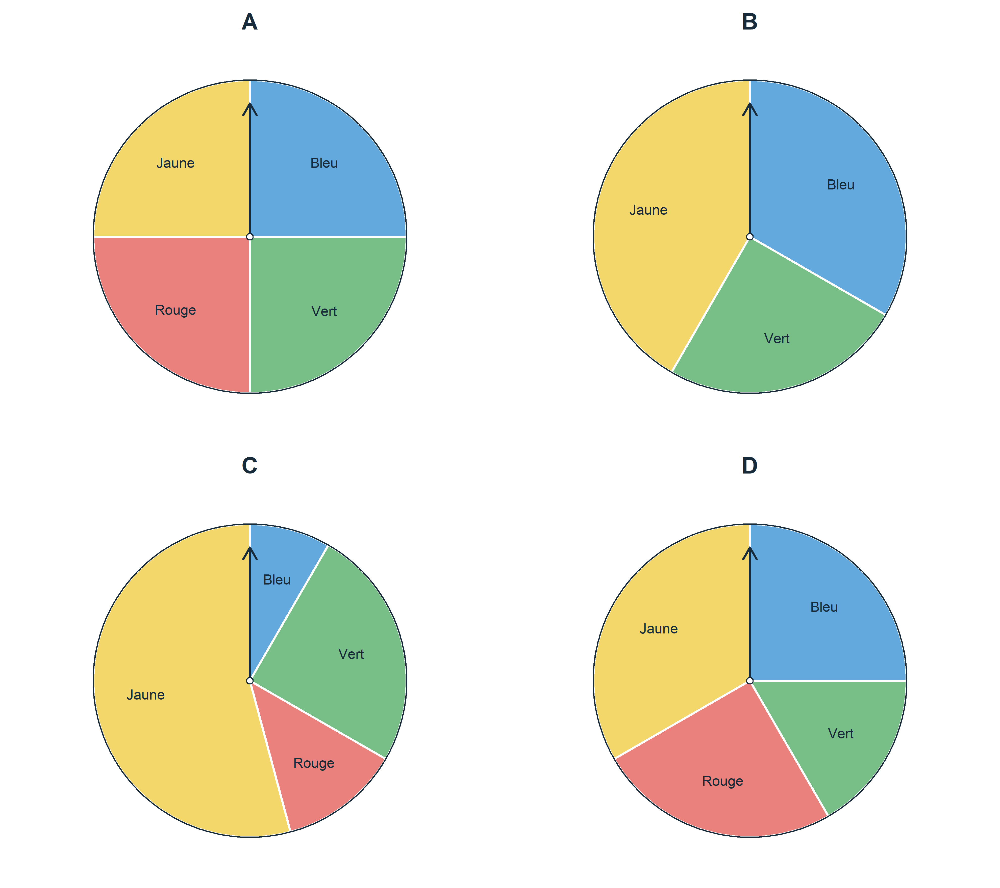

Quel est l’intrus?
Chaque QELI présente quatre éléments. Chacun peut être l’intrus, selon la propriété choisie pour le distinguer des trois autres.
Consigne
Choisis un intrus et justifie pourquoi les trois autres vont ensemble. Trouve ensuite une justification pour chacune des autres cases. Utilise le vocabulaire mathématique approprié.
Quatre distributions, quatre regards
Observe ces quatre distributions de données.
| A | B |
|---|---|
| 1 ; 2 ; 3 ; 4,5 ; 5 | 0 ; 2 ; 3 ; 4 ; 6 |
| C | D |
| 1 ; 3 ; 3 ; 3 ; 5 | 1 ; 2 ; 2,5 ; 4,5 ; 5 |
Quel est l’intrus? Peux-tu défendre chacun des quatre choix?
NotePour l’enseignant — Justifications possibles
Ces justifications sont des pistes; les élèves peuvent en proposer d’autres, à condition que la propriété distingue bien l’élément choisi des trois autres.
- A : seule distribution dont la moyenne n’est pas 3. Sa moyenne vaut 3,1; celle des trois autres vaut 3.
- B : seule distribution dont l’étendue n’est pas 4. Son étendue vaut 6; celle des trois autres vaut 4.
- C : seule distribution qui possède un mode, soit 3. Dans les trois autres, aucune valeur ne se répète.
- D : seule distribution dont la médiane n’est pas 3. Sa médiane vaut 2,5; celle des trois autres vaut 3.
| Distribution | Moyenne | Médiane | Mode | Étendue |
|---|---|---|---|---|
| A | 3,1 | 3 | Aucun | 4 |
| B | 3 | 3 | Aucun | 6 |
| C | 3 | 3 | 3 | 4 |
| D | 3 | 2,5 | Aucun | 4 |
Notions mobilisées : moyenne arithmétique, médiane, mode, étendue et comparaison de distributions.
Relances possibles :
- Si deux distributions ont la même moyenne, ont-elles nécessairement la même médiane?
- Qu’est-ce que l’étendue permet de comparer? Que ne permet-elle pas de voir?
- Peut-on modifier une donnée de A pour que sa moyenne devienne 3, tout en conservant sa médiane et son étendue?
Un même milieu, des centres différents
Observe ces quatre distributions de données.
| A | B |
|---|---|
| 1 ; 3 ; 3 ; 3 ; 5 | 1 ; 2 ; 3 ; 3 ; 11 |
| C | D |
| 0 ; 3 ; 3 ; 4 ; 4 | 1 ; 2 ; 3 ; 4 ; 5 |
Quel est l’intrus? Peux-tu défendre chacun des quatre choix?
NotePour l’enseignant — Justifications possibles
Ces justifications sont des pistes; les élèves peuvent en proposer d’autres, à condition que la propriété distingue bien l’élément choisi des trois autres.
- A : seule distribution où la moyenne, la médiane et le mode sont tous égaux à 3.
- B : seule distribution où la moyenne dépasse la médiane : 4 contre 3. La grande valeur 11 tire la moyenne vers le haut.
- C : seule distribution où la moyenne est inférieure à la médiane : 2,8 contre 3.
- D : seule distribution sans mode : aucune valeur ne se répète.
| Distribution | Moyenne | Médiane | Mode(s) |
|---|---|---|---|
| A | 3 | 3 | 3 |
| B | 4 | 3 | 3 |
| C | 2,8 | 3 | 3 et 4 |
| D | 3 | 3 | Aucun |
Les quatre distributions ont la même médiane. Dans C, les valeurs 3 et 4 apparaissent chacune deux fois : la distribution possède deux modes.
Notions mobilisées : relations entre moyenne, médiane et mode; effet d’une grande ou d’une petite valeur sur la moyenne; comparaison de distributions.
Relances possibles :
- Sans calculer exactement les moyennes, pouvez-vous prévoir lesquelles seront égales, supérieures ou inférieures à la médiane?
- Dans B, si on remplace 11 par 6, que deviennent la moyenne, la médiane et le mode?
- Deux distributions ayant la même moyenne et la même médiane sont-elles nécessairement identiques? Appuyez votre réponse sur les distributions proposées.
Deux dés, quatre relations
On lance un dé rouge et un dé bleu, équilibrés, à six faces. Les deux dés sont lancés indépendamment l’un de l’autre. Chaque case présente deux événements.
| A | B |
|---|---|
| Le dé rouge donne un nombre pair. Le dé bleu donne un nombre pair. |
Le dé rouge donne 1. Le dé rouge donne 2. |
| C | D |
| Le dé rouge donne un nombre pair. Le dé rouge donne un nombre impair. |
Le dé rouge donne 6. Le dé rouge donne un nombre pair. |
Quel est l’intrus? Peux-tu défendre chacun des quatre choix?
NotePour l’enseignant — Justifications et relances
Ces justifications sont des pistes; les élèves peuvent en proposer d’autres, à condition que la propriété distingue bien la paire choisie des trois autres.
- A — Seuls événements indépendants. Connaître le résultat du dé rouge ne change pas la probabilité d’obtenir un nombre pair sur le dé bleu : elle reste de \(1/2\).
- B — Seuls événements incompatibles qui ne sont pas complémentaires. Le dé rouge ne peut pas donner simultanément 1 et 2, mais il peut ne donner ni l’un ni l’autre.
- C — Seuls événements complémentaires. Le résultat du dé rouge est nécessairement pair ou impair, et jamais les deux.
- D — Seuls événements où le premier entraîne le second. Si le dé rouge donne 6, il donne forcément un nombre pair.
Notions mobilisées : événements indépendants, dépendants, compatibles, incompatibles et complémentaires; inclusion d’un événement dans un autre.
Relance commune : « On vous annonce que le premier événement s’est produit. Qu’est-ce que cela change pour le deuxième? »
| Paire | Probabilité initiale du deuxième événement | Sachant que le premier s’est produit | Interprétation |
|---|---|---|---|
| A | \(1/2\) | \(1/2\) | Sa probabilité reste la même. |
| B | \(1/6\) | \(0\) | Il devient impossible. |
| C | \(1/2\) | \(0\) | Il devient impossible. |
| D | \(1/2\) | \(1\) | Il devient certain. |
Cette relance peut être discutée avec les résultats possibles, sans introduire de notation de probabilité conditionnelle.
Autres relances possibles :
- B et C donnent la même réponse à la relance commune. Qu’est-ce qui les distingue? Dans C, les deux événements couvrent toutes les possibilités; dans B, certains résultats ne réalisent aucun des deux.
- Dans quelles cases les deux événements peuvent-ils se produire ensemble? Dans A et D.
- Dans D, si le deuxième événement s’est produit, le premier est-il certain? Non : un nombre pair peut être 2, 4 ou 6.
- Deux événements incompatibles peuvent-ils être indépendants ici? Non : les événements proposés ont chacun une probabilité non nulle, et la réalisation de l’un rend l’autre impossible.
Quatre formes, un même cadre
Ces quatre histogrammes présentent des distributions de 28 observations. Les classes et les échelles sont les mêmes dans les quatre graphiques. Les classes sont de la forme \([0;1[\), \([1;2[\), et ainsi de suite jusqu’à \([6;7[\).
Quel est l’intrus? Peux-tu défendre chacun des quatre choix par une propriété de la forme de sa distribution?
NotePour l’enseignant — Justifications et relance
- A : seule distribution uniforme. Toutes les classes sont également fréquentes; aucune région ne concentre davantage les observations.
- B : seule distribution symétrique avec un sommet central unique. Les observations se concentrent au milieu et deviennent moins fréquentes de chaque côté.
- C : seule distribution présentant deux groupes séparés par une classe vide. Le milieu de la distribution se trouve dans une région sans observations.
- D : seule distribution asymétrique. Les observations se concentrent à gauche, avec une queue qui s’étire vers la droite.
Ces propriétés resteraient les mêmes si on changeait les unités par une conversion proportionnelle positive ou si on multipliait tous les effectifs par un même nombre positif.
Notions mobilisées : forme d’une distribution, uniformité, symétrie, asymétrie, sommets, regroupements et classes sans observations.
Relance : « Dans quels histogrammes une valeur située au centre décrit-elle bien les observations? Dans lesquels pourrait-elle être trompeuse? »
Pistes de discussion : dans B, le centre correspond à la région la plus fréquentée. Dans A, aucune région n’est privilégiée. Dans C, une valeur centrale ne représente aucun des deux groupes et peut même tomber dans la classe vide. Dans D, il faut distinguer le centre de l’axe et la région où se concentrent les observations; la queue vers la droite influence aussi le choix d’une valeur représentative.
Création originale pour cette collection. Le graphique est généré en R; son code est conservé dans le fichier QMD, sans être affiché dans la page.
Quatre nuages, quatre particularités
Observe ces quatre nuages de points, représentés avec les mêmes échelles. Les données sont simulées.

Quel est l’intrus? Peux-tu défendre chacun des quatre choix par une particularité de la répartition des points?
NotePour l’enseignant — Justifications et relance
- A : seul nuage où on semble voir deux groupes dans les données, suivant des tendances différentes. Leurs plages de valeurs de \(x\) se chevauchent.
- B : seul nuage présentant un intervalle de valeurs de \(x\) sans observations, entre deux portions d’une même tendance apparente.
- C : seul nuage où plusieurs observations ont exactement le même \(x\), mais des \(y\) différents. Les nombres de répétitions et les écarts entre les réponses varient.
- D : seul nuage où la dispersion autour de la tendance semble augmenter avec \(x\).
Notions mobilisées : nuage de points, tendance, regroupements, valeurs répétées, dispersion et pertinence d’un modèle linéaire.
Relance : « Dans quels nuages un modèle linéaire semble-t-il approprié? Quelles réserves auriez-vous? »
Pistes de discussion :
- A : une seule droite semble peu adaptée; on pourrait envisager un modèle pour chacun des deux groupes apparents. Une information supplémentaire sur les observations aiderait à vérifier l’existence de ces groupes.
- B : une droite semble plausible, mais aucune observation ne permet de vérifier la relation dans le trou en \(x\).
- C : les \(x\) répétés n’empêchent pas un modèle linéaire; ils montrent la variabilité des réponses pour une même valeur de \(x\).
- D : une droite peut décrire la tendance, mais les prédictions semblent moins précises lorsque \(x\) augmente.
Création originale pour cette collection. Les données et le graphique sont générés dans le bloc R du QMD; la graine aléatoire est fixée pour conserver le même graphique lors des rendus.
Un sac ou toute une collection?
Voici quatre questions à propos de croustilles.
| A | B |
|---|---|
| Combien de croustilles contient ce sac précis? | Combien de croustilles un sac de ce format contient-il habituellement? |
| C | D |
| Quelle est la saveur des croustilles dans ce sac précis? | Quelles saveurs de croustilles les élèves de cette classe préfèrent-ils? |
Quel est l’intrus? Peux-tu défendre chacun des quatre choix?
Adaptation française de Which One Doesn’t Belong?: Types of Data, activité 1.1, Illustrative Mathematics, Algebra 1, unité 1, leçon 1 (2019), sous licence CC BY 4.0. La formulation a été précisée pour distinguer un sac particulier d’un ensemble de sacs. Les justifications et relances ci-dessous ont été rédigées pour cette collection.
NotePour l’enseignant — Justifications et relances
- A : seule question qui demande une quantité concernant un seul objet, sans étudier la variabilité d’un ensemble.
- B : seule question statistique qui porte sur des données quantitatives : on compare les nombres de croustilles de plusieurs sacs pour déterminer une valeur représentative.
- C : seule question qui demande une catégorie concernant un seul objet, sans étudier la variabilité d’un ensemble.
- D : seule question statistique qui porte sur des données qualitatives : on recueille les préférences de plusieurs élèves.
Notions mobilisées : question statistique, variabilité, caractères qualitatifs et quantitatifs, unité observée et population.
Relances possibles :
- On a compté 42 croustilles dans un sac. Cela suffit-il pour répondre à B? Pourquoi?
- Comment transformer A ou C en une question statistique?
- Pour répondre à B, faut-il demander aux personnes interrogées une « moyenne », ou compter les croustilles de plusieurs sacs?
- Pour D, quelle différence y a-t-il entre la question de recherche et la question posée à chaque élève?
Pour prolonger avec la source : ce QELI sert d’amorce à une leçon plus longue. L’activité 1.2 — Representing Data About You and Your Classmates, prévue pour environ 25 minutes, propose de formuler des questions, de recueillir des données auprès des camarades et de résumer les réponses. Elle prolonge la distinction entre questions statistiques et non statistiques, et entre données quantitatives et qualitatives. La ressource est en anglais.
Quatre roulettes, quatre façons de surprendre
Une roulette idéale donne une probabilité proportionnelle à l’angle du secteur. Voici les angles occupés par chaque couleur dans quatre roulettes. Un angle de \(0°\) signifie que la couleur est absente.
| Couleur | Roulette A | Roulette B | Roulette C | Roulette D |
|---|---|---|---|---|
| Bleu | \(90°\) | \(120°\) | \(30°\) | \(90°\) |
| Vert | \(90°\) | \(90°\) | \(90°\) | \(60°\) |
| Rouge | \(90°\) | \(0°\) | \(45°\) | \(90°\) |
| Jaune | \(90°\) | \(150°\) | \(195°\) | \(120°\) |

Quelle roulette est l’intrus? Peux-tu défendre chacun des quatre choix?
Adaptation française en tableau et en graphiques générés en R de Which One Doesn’t Belong: Spinners, activité 6.1, Illustrative Mathematics et Open Up Resources, Grade 7, unité 8, leçon 6 (2017–2019), sous licence CC BY 4.0. Les angles exacts ont été choisis pour cette adaptation; ils ne constituent pas des mesures vérifiées des images originales. Les justifications et relances ont été rédigées pour cette collection.
NotePour l’enseignant — Justifications et relances
- A : seule roulette dont les couleurs sont équiprobables : chacune a une probabilité de \(1/4\).
- B : seule roulette où obtenir du rouge est impossible. Les trois autres comportent cette couleur.
- C : seule roulette où une couleur est plus probable que toutes les autres réunies : le jaune occupe \(195°\), contre \(165°\) pour le reste.
- D : seule roulette où la probabilité du vert n’est pas \(1/4\) : elle vaut \(60/360=1/6\).
Notions mobilisées : équiprobabilité, événement impossible, événements complémentaires, probabilité géométrique et comparaison de probabilités.
Relances possibles :
- Peut-on calculer la probabilité du jaune en comptant simplement les couleurs?
- Dans C, comparez les événements « jaune » et « pas jaune », sans convertir les angles en pourcentages.
- Pour A, quatre lancers donneront-ils nécessairement une fois chaque couleur?
- Comment construire une roulette avec les mêmes couleurs que A, mais sans équiprobabilité?
Pour prolonger avec la source : ce QELI ouvre une leçon sur la simulation. L’activité 6.2 — Diego’s Walk, prévue pour environ 20 minutes, fait estimer une probabilité à partir de simulations répétées et suivre l’évolution de la fréquence observée. L’activité 6.3 — Designing Experiments, sur la même page, ajoute environ 10 minutes pour concevoir des expériences aléatoires qui représentent des situations concrètes. Ces activités permettent de passer des probabilités théoriques à leur estimation expérimentale. La ressource est en anglais.
Références et pistes à explorer
QELI — Mathématique au secondaire, CSSDM : principe de la causerie mathématique.
Progression des apprentissages en mathématique au secondaire, section Probabilités, page 22, rubrique A, points 11 et 12 : types d’événements.
Pour les questions sur les distributions : section Statistique de la Progression des apprentissages, pages 24 à 26.
Les cinq premières questions ont été créées pour cette collection. « Un sac ou toute une collection? » et « Quatre roulettes, quatre façons de surprendre » sont des adaptations de ressources publiées; leurs sources et modifications sont indiquées sous chaque énoncé.
Autres QELI repérés en ligne, à examiner pour de futurs ajouts :
- Which One Doesn’t Belong: Histograms, activité 8.1, Illustrative Mathematics et Open Up Resources, Grade 6, unité 8 : comparaison de distributions représentées par des histogrammes. Piste pour une future question graphique sur le centre, la dispersion et les intervalles sans données.
- Which One Doesn’t Belong: Events, activité 10.1, Illustrative Mathematics, Geometry, unité 8 : événements associés à une pièce et à un dé. Piste pour revenir sur l’indépendance, la compatibilité et la complémentarité avec un autre contexte.
Ressources consultées le 13 octobre 2026. Les appellations Grade 6, Grade 7, Algebra 1 et Geometry désignent les cours des ressources originales; elles ne constituent pas une équivalence avec les années du secondaire québécois.
Licence
Sauf indication contraire, les contributions originales à cette collection et son organisation sont proposées sous licence Creative Commons Attribution – Pas d’utilisation commerciale 4.0 International (CC BY-NC 4.0). Elles peuvent être partagées et adaptées pour des usages non commerciaux, à condition de créditer la source, de fournir un lien vers la licence et de signaler les modifications.
Les contenus provenant d’Illustrative Mathematics et d’Open Up Resources conservent leur licence CC BY 4.0. La restriction non commerciale s’applique aux contributions originales de cette collection, y compris celles apportées aux adaptations, et ne modifie pas les permissions accordées sur les contenus sources. Les crédits et les modifications sont indiqués auprès de chaque activité adaptée.